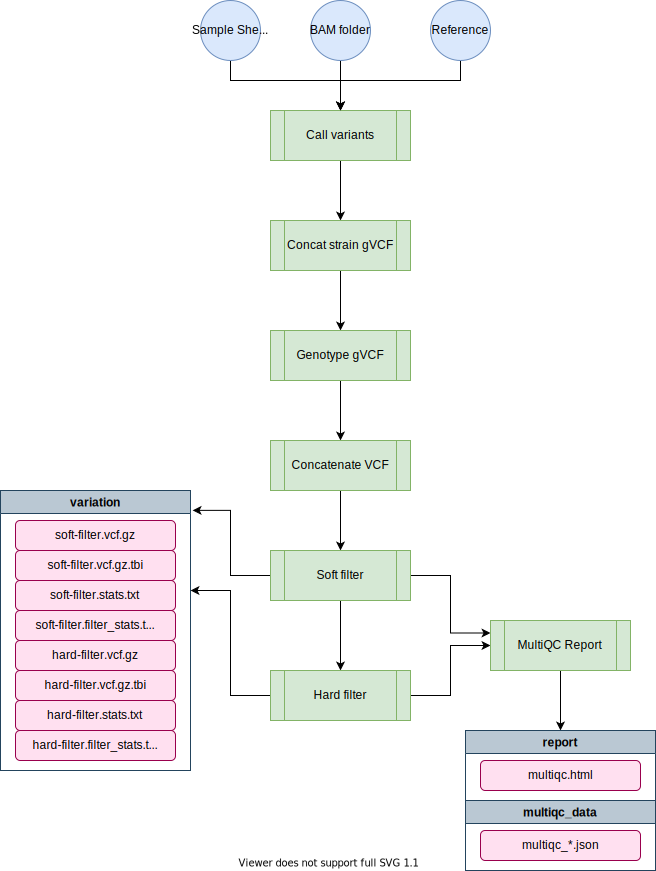

wi-gatk¶
The wi-gatk pipeline filters and calls variants from wild isolate sequence data.
Pipeline Overview¶
_______ _______ _______ __ __ _______ _______
| __| _ |_ _| |/ | | | | ___|
| | | | | | | < | | ___|
|_______|___|___| |___| |__|\\__| |__|____|___|
parameters description Set/Default
========== =========== ========================
--debug Use --debug to indicate debug mode null
--output Release Directory WI-{date}
--sample_sheet Sample sheet null
--bam_location Directory of bam files /projects/b1059/data/{species}/WI/alignments/
--mito_name Contig not to polarize hetero sites MtDNA
Reference Genome
---------------
--reference_base Location of ref genomes /projects/b1059/data/{species}/genomes/
--species/project/build These 4 params form --reference {species} / {project} / {ws_build}
Variant Filters
---------------
--min_depth Minimum variant depth 5
--qual Variant QUAL score 30
--strand_odds_ratio SOR_strand_odds_ratio 5
--quality_by_depth QD_quality_by_depth 20
--fisherstrand FS_fisher_strand 100
--high_missing Max % missing genotypes 0.95
--high_heterozygosity Max % max heterozygosity 0.10

Software Requirements¶
- The latest update requires Nextflow version 20.0+. On QUEST, you can access this version by loading the
nf20conda environment prior to running the pipeline command:
module load python/anaconda3.6
source activate /projects/b1059/software/conda_envs/nf20_env
Alternatively you can update Nextflow by running:
nextflow self-update
Relevant Docker Images¶
andersenlab/gatk4(link): Docker image is created within this pipeline using GitHub actions. Whenever a change is made toenv/gatk4.Dockerfileor.github/workflows/build_docker.ymlGitHub actions will create a new docker image and push if successfulandersenlab/r_packages(link): Docker image is created manually, code can be found in the dockerfile repo.
To access these docker images, first load the singularity module on QUEST.
module load singularity
Also, make sure that you add the following code to your ~/.bash_profile. This line makes sure that any singularity images you download will go to a shared location on b1059 for other users to take advantage of (without them also having to download the same image).
# add singularity cache
export SINGULARITY_CACHEDIR='/projects/b1059/singularity/'
Usage¶
Note: if you are having issues running Nextflow or need reminders, check out the Nextflow page.
Profiles¶
The nextflow.config file included with this pipeline contains three profiles. These set up the environment for testing local development, testing on Quest, and running the pipeline on Quest.
local- Used for local development. Uses the docker container.debug- Runs a small subset of available test data. Should complete within a couple of minutes. For testing/diagnosing issues on Quest.quest- Runs the entire dataset.
Note
If you forget to add a -profile, the quest profile will be chosen as default
Running the pipeline locally¶
When running locally, the pipeline will run using the andersenlab/gatk4 docker image. You must have docker installed.
nextflow run andersenlab/wi-gatk -profile local -resume
Debugging the pipeline on Quest¶
When running on Quest, you should first run the quest debug profile. The Quest debug profile will use a test dataset and sample sheet which runs much faster and will encounter errors much sooner should they need to be fixed. If the debug dataset runs to completion it is likely that the full dataset will as well.
nextflow run andersenlab/wi-gatk -profile debug -resume
Running the pipeline on Quest¶
The pipeline can be run on Quest using the following command:
nextflow run andersenlab/wi-gatk -profile quest --sample_sheet <path_to_sheet>
Parameters¶
Most configuration is handled using the -profile flag and nextflow.config; If you want to fine tune things you can use the options below.
--sample_sheet¶
The sample sheet is automatically generated from alignment-nf. The sample sheet contains 5 columns as detailed below:
| strain | bam | bai | coverage | percent_mapped |
|---|---|---|---|---|
| AB1 | AB1.bam | AB1.bam.bai | 64 | 99.4 |
| AB4 | AB4.bam | AB4.bam.bai | 52 | 99.2 |
| BRC20067 | BRC20067.bam | BRC20067.bam.bai | 30 | 92.5 |
Important
It is essential that you always use the pipelines and scripts to generate this sample sheet and NEVER manually. There are lots of strains and we want to make sure the entire process can be reproduced.
Note
The sample sheet produced from alignment-nf is only for strains that you ran in the alignment pipeline most recently. If you want to combine old strains with new strains, you will have to combine two or more sample sheets. If you are running a species-wide analysis for CeNDR, please follow the notes in the full WI protocol here
--bam_location (optional)¶
Path to directory holding all the alignment files for strains in the analysis. Defaults to /projects/b1059/data/{species}/WI/alignments/
Important
Remember to move your bam files output from alignment-nf to this location prior to running wi-gatk. In most cases, you will want to run wi-gatk on all samples, new and old combined.
--species (optional)¶
default = c_elegans
Options: c_elegans, c_briggsae, or c_tropicalis
--project (optional)¶
default = PRJNA13758
WormBase project ID for selected species. Choose from some examples here
--ws_build (optional)¶
default = WS283
WormBase version to use for reference genome.
--reference (optional)¶
A fasta reference indexed with BWA. On Quest, the reference is available here:
/projects/b1059/data/c_elegans/genomes/PRJNA13758/WS283/c_elegans.PRJNA13758.WS283.genome.fa.gz
Note
If running on QUEST, instead of changing the reference parameter, opt to change the species, project, and ws_build for other species like c_briggsae (and then the reference will change automatically)
--mito_name (optional)¶
Name of contig to skip het polarization. Might need to change for other species besides c_elegans if the mitochondria contig is named differently. Defaults to MtDNA.
--output (optional)¶
A directory in which to output results. By default it will be WI-YYYYMMDD where YYYYMMDD is todays date.
Output¶
The final output directory looks like this:
├── variation
│ ├── *.hard-filter.vcf.gz
│ ├── *.hard-filter.vcf.tbi
│ ├── *.hard-filter.stats.txt
│ ├── *.hard-filter.filter_stats.txt
│ ├── *.soft-filter.vcf.gz
│ ├── *.soft-filter.vcf.tbi
│ ├── *.soft-filter.stats.txt
│ └── *.soft-filter.filter_stats.txt
└── report
├── multiqc.html
└── multiqc_data
└── multiqc_*.json
Data Storage¶
Cleanup¶
The hard-filter.vcf is the input for both the concordance-nf pipeline and the post-gatk-nf pipeline. Once both pipelines have been completed successfully, the hard and soft filter vcf and index files (everything output in the variation folder) can be moved to /projects/b1059/data/{species}/WI/variation/{date}/vcf.